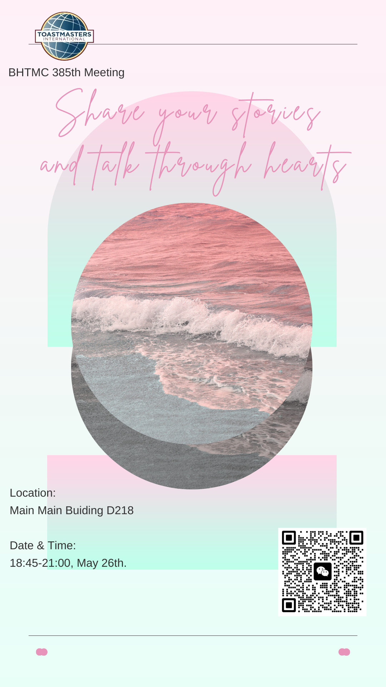

Beihang TMC 385th Meeting
Time flying, stories coming. In the sea of stories we grown up. A relationship, a success, a travel… everything happens can be a story, whether told by others or occurred to us. People like to tell stories that impress them most to others. If you want to share stories, welcome to our story-sharing party.
Theme: Share your stories and talk through hearts.
Location: New Main Buiding D218北京航空航天大学(学院路校区)新主楼D座
Date & Time: 18:45-21:00,May 26th.
Table Topic Master: Lycs Walnut